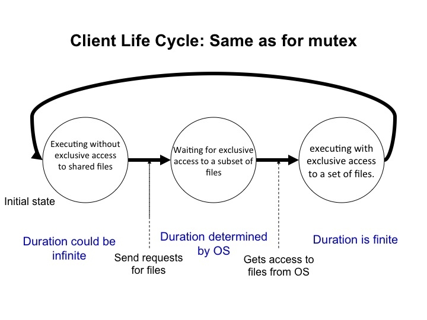
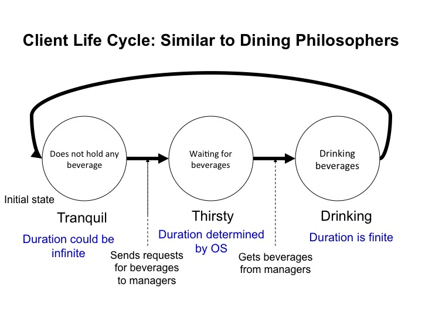
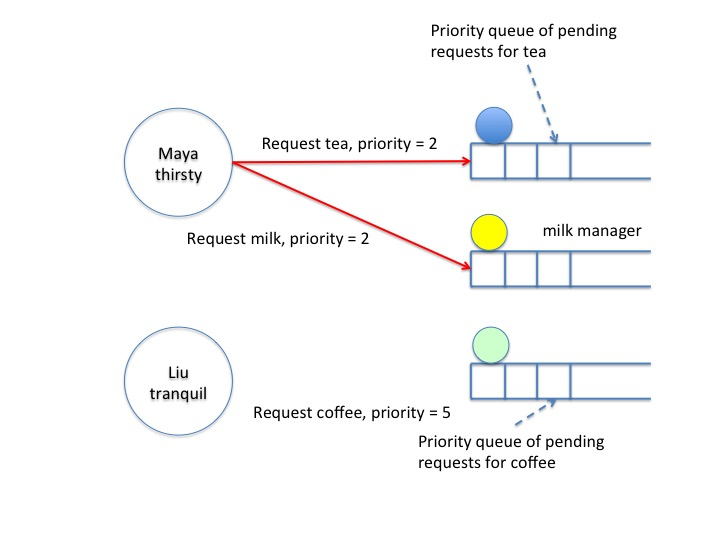
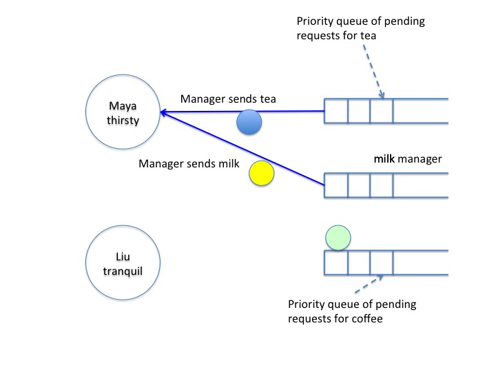
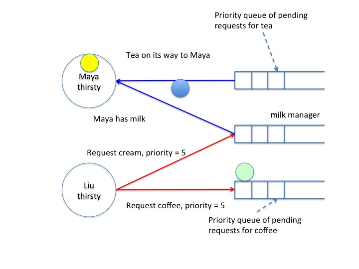
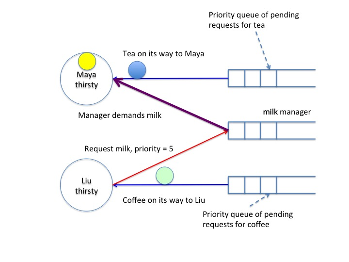
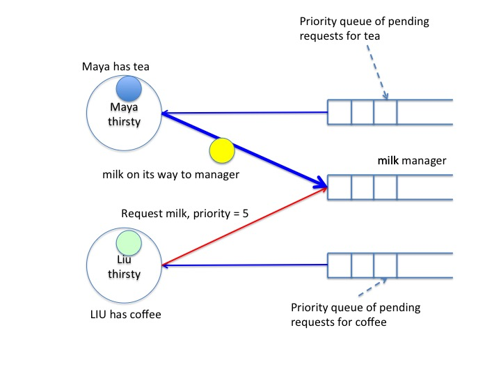
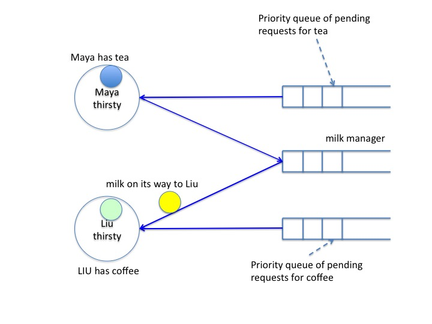
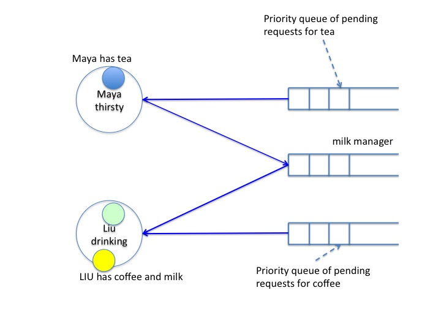

This module describes algorithms for "The Distributed Drinking
Philosophers Problem," by which distributed agents share indivisible
resources, such as exclusive access to files.
Key Ideas
This module describes algorithms by which distributed agents
share indivisible resources, such as exclusive access to files,
in a fair way.
The module shows how to use a total ordering of
priorities to share resources fairly. The dining philosophers
algorithm, given in an earlier module, uses a partial ordering.
We show how time --- readings from local clocks of agents --- is
used to obtain priorities that are totally ordered.
The description of the algorithm in this module is not as detailed
as that given for dining philosophers. You can define a formal
specification and carry out a detailed proof for this algorithm in
almost exactly the same was as for dining philosophers.
The Problem
A set of agents shares a set of indivisible resources. Exclusive
access to a file is an example of an indivisible resource.
The
lifecycle of an agent is the same as in Dining Philosophers: (1)
executing outside the critical section, (2) waiting to enter a
critical section, and (3) executing in the critical section. The
problem is identical to Dining Philosophers except for the
transition to the critical section.
An agent executes outside the critical section without
holding any resources. An agent may execute outside critical
sections for ever, or it may start waiting to enter a critical section.
When an agent starts waiting
to enter a critical section it waits to get exclusive access to a
nonempty subset of the resources. It continues waiting until it
gets all the resources for which it waits. While it waits it does
not change the subset of resources for which it waits.
The agent continues to hold these resources when it executes in
the critical section. An agent remains in a critical section for
only a finite number of steps and then starts executing outside
the critical section at which point it no longer needs resources.
For example, an agent needs exclusive access to a set of files for
it to execute in its next critical section, and it waits until it
is given this access. While it is in the critical section it
continues to have exclusive access to these files. When it is
executing outside the critical section it does not need access to
these files. Each time an agent starts to wait it may wait for a
different set of files.

Fig.1: Agent Lifecycle
The ideas in this module can be used to manage agents that require
read or write access to files. Multiple agents can have read
access to a file concurrently. While an agent has write access to
a file no other agent can have access to the file. A homework
problem deals with read/write access.
Drinking Philosophers
The drinking philosophers name is another example of an attempt at
CS humor. A philosopher is in one of three states: tranquil,
thirsty or drinking. A philosopher may remain tranquil
for ever, or it may become thirsty for one or more beverages. It
remains thirsty until it gets all the beverages for which it
waits. Only when a thirsty philosopher gets all the beverages for
which it waits does it start drinking. It continues to drinking all these
beverages until it becomes tranquil again. Philosophers drink for only
finite time.

Fig.1: Drinking Philosophers
A beverage can be held by at most one philosopher. Imagine there's
only one bottle of each beverage in the system, and philosophers send
bottles to each other. One philosopher can drink vodka and cola
while another philosopher drinks gin and tonic. However, one agent cannot drink
vodka and cola while another drinks vodka and orange juice.
An Algorithm
There are many algorithms for this problem; here we discuss one.
Each beverage is an indivisible unique token. A token is
exchanged between agents and a manager of the token. We assume
that each token has its own manager --- this assumption is merely for
convenience of exposition.
Messages
request: An agent sends a request for a beverage to a
manager. A request is a pair \(agent\_id, request\_priority\), the
id of the requestor and the priority of the request.
beverage: A manager sends a beverage to a requesting agent, and agents
send beverages back to managers. A beverage is uniquely identified
by its name.
demand: A manager sends a demand to an agent for the
beverage that the manager manages and that the agent holds.
Agent Actions
When an agent becomes thirsty it sends requests to managers for
all the beverages that it needs to drink.
If a thirsty agent gets a demand to return a beverage to a manager
then the agent returns the beverage and sends another request for
the beverage. The priority of this new request is the same as the
priority of this agent's last request.
If a thirsty agent gets all the beverages that it needs to drink
then it starts drinking.
When an agent finishes drinking it returns all the beverages that
it holds to the managers of the beverages.
Manager Actions
A manager has local variable \((hr, hp)\), which is the id of the agent to which the
manager has most recently sent
the beverage, and the priority of the request made by that
agent. \(hr\) is an acronym for handling requestor,
and \(hp\) is an acronym for handling priority.
If the manager holds the beverage then this variable is empty (\(Null\)).
A manager also maintains a priority queue of pending requests ordered by
priority.
The actions of a manager are as follows.
If a manager gets a request \((r, p)\) while it holds a beverage then it
sends the beverage to the requestor \(r\), and sets
\(hr, hp = r, p\).
If a manager gets a request \((r, p)\) while it does not hold the
beverage and \(hp > p\) then the manager inserts the request \((r,
p)\) into the priority queue of pending requests.
If a manager gets a request \((r, p)\) while it does not hold the
beverage and \(hp < p\) then:
the manager sends a demand to \(hr\) to return the
beverage, if the manager has not already sent that demand, and
the manager inserts the request \((r, p)\) into its priority queue of
pending requests.
If a manager gets a beverage and it has no pending requests then
the manager holds the beverage and sets the handling requestor and
priority to empty.
If a manager gets a beverage and it has pending requests then
let \((r, p)\) be the request at the head of the priority queue
(i.e. the request with the highest priority). It sends the
beverage to requestor \(r\),
removes \((r, p)\) from the queue of pending requests,
and sets
\(hr, hp = r, p\).
Example
The example shows a scenario. The system has two agents, Maya and
Liu both of whom are tranquil in the initial state. There are three beverages: Tea,
coffee and milk. Initially, these beverages are with their managers.
The next diagram, stage 1, shows the state after Maya gets thirsty for tea and milk.
So she sends requests to the managers of tea and milk. The priority
of this request is 2. (We will discuss how priorities are obtained
later.)

Fig.3: Stage 1
The next diagram, stage 2, shows the situation after the managers of tea and
milk get requests from Maya, and respond by sending the beverages to
Maya because there are no pending requests for these beverages. The
beverages, tea and milk, are in the channel to Maya.

Fig.4: Stage 2
The stage 3 diagram shows a state after Liu becomes thirsty for
coffee and milk. So she sends requests for coffee and milk to the
managers of these beverages. The priority of the request is 5.
Maya has received the milk beverage but tea is still in the
channel. So, Maya remains thirsty.

Fig.5: Stage 3
The stage 4 diagram shows a state in which the coffee manager
receives Liu's request and sends
coffee to Liu because there are no pending requests for coffee. When
the milk manager gets Liu's request, the manager puts the request on
the priority queue of pending requests. At this point the queue has
only Liu's request.
The
milk manager demands milk back from Maya because her request has
priority 2 whereas Liu's request has priority 5. Maya is still
thirsty because the tea hasn't arrived yet.

Fig.6: Stage 4
Next, Maya receives the demand for milk and responds by sending the
milk back to the milk manager. Maya also resends its original
request for milk, with priority 2, to the milk manager.
Then Maya receives tea. Maya
continues to be thirsty because she has only one of the two
beverages that she needs to drink. Liu has coffee, but she remains
thirsty because milk is in the channel from Maya to the milk manager.

Fig.7: Stage 5
In stage 6, the milk manager has received Maya's request for milk with
priority 2 and received milk. So, the milk manager sends the milk to
respond to the highest priority request in the priority queue; this
request is from Liu. The milk manager puts Maya's request into the
queue of pending requests.

Fig.8: Stage 6
In stage 7, Liu has received both milk and coffee, and so she is
drinking. Maya is still thirsty, holding tea, while Maya's request for
milk is in the queue of pending requests for milk.

Fig.9: Stage 7
How Priorities Change
If priorities don't change then the agents with high priorities
may continue to go rapidly through the tranquil, thirsty, drinking
cycle while other agents remain thirsty for ever.
One way to assign priorities is as follows.
Associated with each request is a timestamp which is
the time read from the requestor's local clock at the instant at which
the request is made. A request's timestamp does not change after the
request is created.
A request's priority is a pair (timestamp,
requestor's id), with priorities compared lexicographically, and lower
values having higher priority. So, requests made earlier have higher
priority than requests made later. The requestor's id is used to break
ties.
What are the requirement's of agents' local
clocks that ensure that all thirsty philosophers drink eventually?
A Minimum Requirement on Clocks
Clocks must tick forward. If the clock remained stuck at the same
value for ever then the agent reading that clock may get the highest
priority for ever.
Assume that each clock reading is an integer: for example, the number of
picoseconds since January 1, 1900. (NTP units are \(2^{-32}\) of a
second.) Assume also that the clock ticks forward by at least one unit
between successive requests by the same philosopher. Even if the
philosopher makes a new request when its clock ticks forward by one
unit, eventually the timestamp of a request from that philosopher will
exceed \(T\) for any value of \(T\). This ensures that while a
philosopher is thirsty, another philosopher cannot overtake it for
ever.
Proof of Correctness
Let's prove that a thirsty philosopher \(v\) with a request with timestamp
\(T\) drinks eventually. Let \(t[i]\) be the reading of philosopher
\(i\)'s clock. Consider a variant function that measures how far
clocks for philosophers with clock readings less than \(T\) are from \(T\):
Next, we show that \(v\) drinks or \(f\) decreases to
\(0\). Just as in the proof of the dining philosophers problem we show
that the following two properties hold.
Safety: The variant function does not increase while \(v\)
remains thirsty.
Progress: The following predicate does not hold forever: The
variant function remains unchanged and \(v\) remains thirsty.
The proof of the safety part follows from the fact that \(T\) remains
unchanged while the philosopher remains thirsty, and \(t[i]\) does not
decrease for all \(i\). The proof of the progress part follows from
\(t[i]\) increasing eventually, for all \(i\).
The next part of the proof is to show that if clocks of all
philosophers exceed \(T\) then \(v\) drinks. A variant function that
we use here is the number of pending requests with timestamps less
than or equal to \(T\).
Review
In the algorithm, each manager of a resource maintains a
priority queue of requests for the resource. Is the algorithm
correct if managers maintain first-come-first-served queues rather
than priority queues?
Show that the proposed variant function is correct: show that it
does not increase while an agent remains thirsty, and show that it
decreases eventually.
K. Mani Chandy,
Emeritus Simon Ramo Professor,
California Institute of Technology